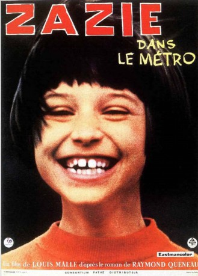

#9594 Zazie
Alternativ: Zazie dans le Métro (Englischer Titel)
 
 IMDB-Wertung: 7.1 / 10
IMDB-Wertung: 7.1 / 10  Metascore: 0
Metascore: 0 
Weil ihre Mutter endlich einmal mit ihrem Liebhaber ungestört sein möchte, soll die zehnjährige Zazie das Wochenende bei ihrem Onkel in Paris verbringen. Zazies größter Wunsch ist es, einmal mit der Metro zu fahren. Doch leider streiken die öffentlichen Verkehrsmittel. Und Onkel Gabriel muss feststellen, dass es leichter ist, einen Sack Flöhe zu hüten, als auf die freche Zazie aufzupassen. So begleiten wir die beiden und viele andere skurrile und schillernde Gestalten bei ihrer turbulenten Odyssee durch das vom Streik gelähmte Paris - einer anarchistischen Reise durch die Wunder der Großstadt.
ggf defekt, lässt sich nicht vorspulen
Jahr: 1960
Dauer: 92 Minuten
FSK: 6
Land: Frankreich Studio: Neue Filmkunst Walter KirchnerTonspuren:
Untertitel: Deutsch,
Auflösung: 1080p (1488x1080) Größe: 5601 MB
Genre: Komödie, Fantasy
Regisseur: Louis Malle
Drehbuch: Raymond Queneau, Louis Malle, Jean-Paul Rappeneau
Soundtrack: Fiorenzo Carpi, André Pontin
Darsteller:
 Philippe Noiret als Oncle Gabriel
Philippe Noiret als Oncle Gabriel Hubert Deschamps als Turandot
Hubert Deschamps als Turandot- Carla Marlier als Albertine
- Vittorio Caprioli als Trouscaillon
- Claude Berri als Waiter (uncredited)
- Sacha Distel als Cameo appearance (uncredited)
 Pâquerette als (uncredited)
Pâquerette als (uncredited)- Catherine Demongeot als Zazie
- Annie Fratellini als Mado
- Jacques Dufilho als Ferdinand Grédoux
- Yvonne Clech als Madame Mouaque
- Odette Piquet als La mère de Zazie
- Nicolas Bataille als Fédor
- Antoine Roblot als Charles
- Marc Doelnitz als M. Coquetti
- Jacques Gheusi als Le gérant
- Christine Howard als
- Louis Lalanne als L'amant de Jeanne
- Little Bara als Permanent
- Georges Faye als Permanent
- De Lannoy als Permanent
- Paul Vally als Permanent
- Jean-Yves Bouvier als Permanent
- Jean-Pierre Posier als Permanent
- Jeanne Allard als Permanent
- Jacqueline Doyen als Permanent
- Arlette Balkis als Permanent
- Alegrina als Permanent
- Virginie Merlin als Permanent
- Irène Chabrier als Permanent
- Simone Duhart als Permanent
- Max Desrau als Permanent
- Claude Confortès als Permanent
- Richard Bigotini als
- Jean Rupert als Un touriste (uncredited)
Datei: X:\1960\Zazie (1960, FSK6, 1488x1080).mkv seit 14.09.2018
Festplatte: HD 1900-1970
 Es gibt insgesamt 21 Filme in der Gruppe '1960'
Es gibt insgesamt 21 Filme in der Gruppe '1960'